Building a Customized CRM report for your company
is now an easier process. Get your CRM reports ready in a few seconds through the customized CRM report application.
Whether you need to create a Win-Loss Report of the salesperson at different dates or a CRM stage report with
the same details, you can rely on the app. You can get all the components of information on a single sheet
regarding your CRM. Be updated about every point of your system through these reports.
- All in One Reports Creation
The application allows developing customized CRM reports with every bit of
information including the salesperson's name and dates.
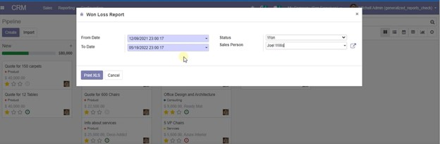
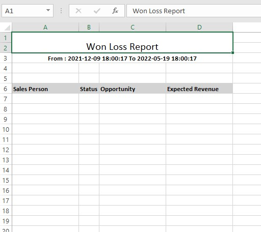
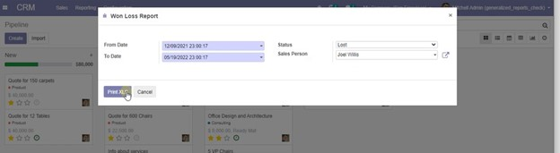
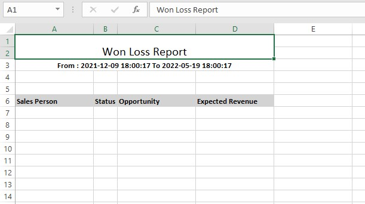
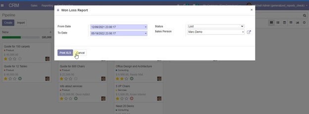
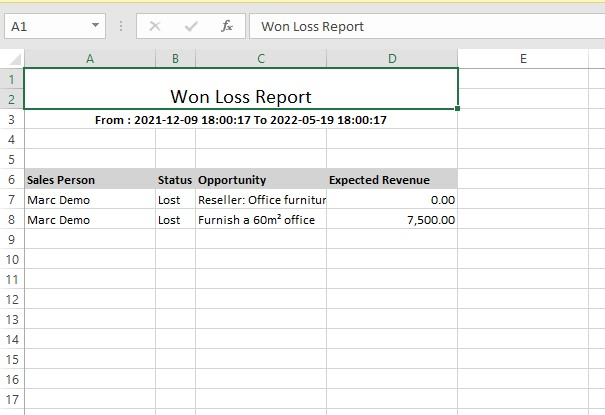
- Highly informative Customized Report
The CRM stage report consists of each and every data that is essential to create a report.
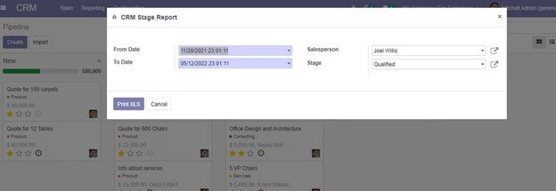
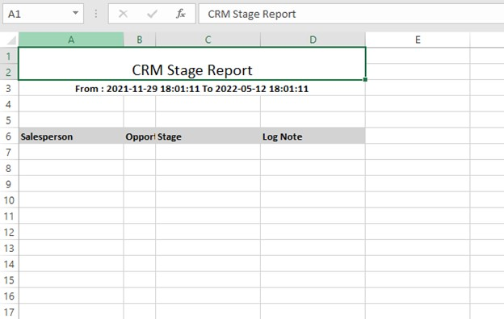
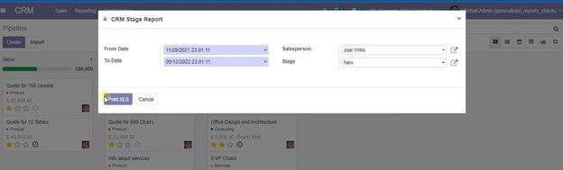
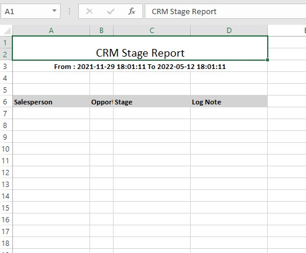
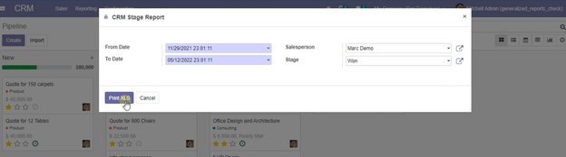
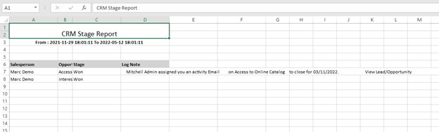